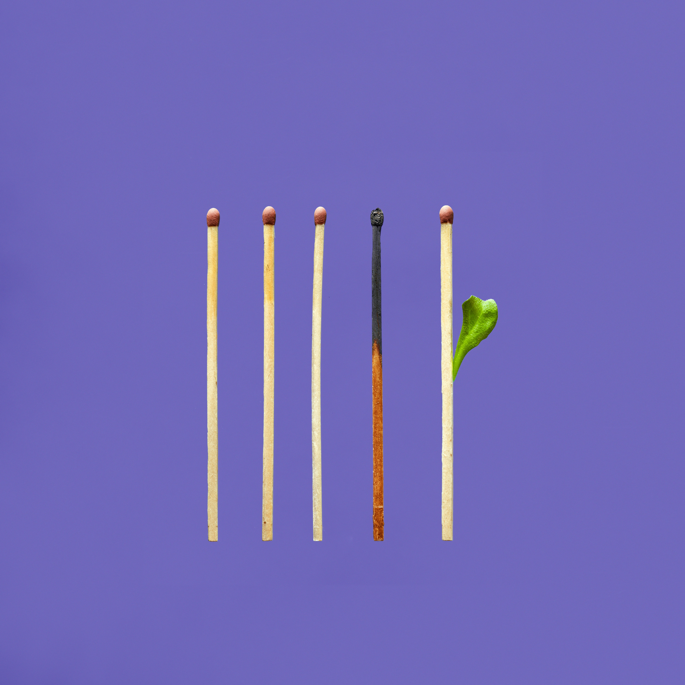

Burnout
Introduction:
Burnout is a state of emotional, physical, and mental exhaustion caused by excessive and prolonged stress. It occurs when you feel overwhelmed, emotionally drained, and unable to meet constant demands.

Symptoms:
Burnout can manifest in various ways, including:
- Physical Symptoms:
- Feeling tired and drained most of the time.
- Frequent headaches or muscle pain.
- Changes in appetite or sleep habits.
- Emotional Symptoms:
- Sense of failure and self-doubt.
- Feeling helpless, trapped, and defeated.
- Detachment, feeling alone in the world.
- Loss of motivation.
- Behavioral Symptoms:
- Withdrawing from responsibilities.
- Isolating yourself from others.
- Procrastinating, taking longer to get things done.
Tips to Overcome Burnout:
- Seek Support:
- Reach out to friends, family, or a therapist for support.
- Take Breaks:
- Incorporate regular breaks into your daily routine to rest and recharge.
- Practice Self-Care:
- Engage in activities that you enjoy and that help you relax.
- Set Boundaries:
- Learn to say no to demands that overwhelm you.
- Maintain a Healthy Lifestyle:
- Ensure you get enough sleep, eat a balanced diet, and exercise regularly.